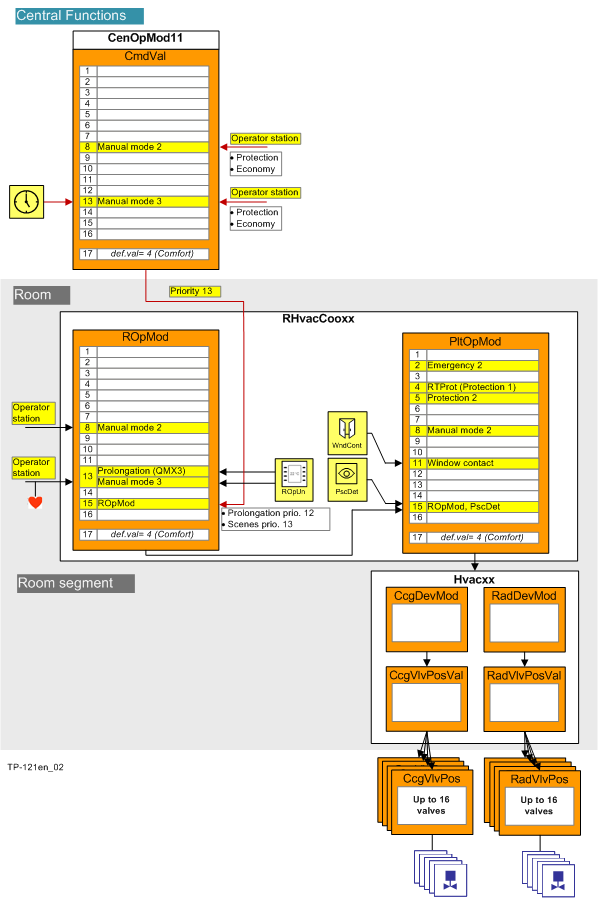

优先事项
Priority array
一个房间应用程序可以实现多个目标。因此，不同对象的功能在同时实现时可能会发生冲突。在这种情况下，命令优先级根据命令值具有优先级的 BACnet 对象（输出对象或值对象）的优先级矩阵进行计算。
优先级数组分为三个功能组：
- Emergency operation
- Protection function
- Automatic / manual operation
Priority array for HVAC including central operating mode

优先阶段 | 姓名 | 描述 |
|---|---|---|
1 | Prio 1 Emergency, manual | N/A |
2 | Prio 2 Emergency | 人员安全（对象无法切换）。 |
3 | Prio 3 Emergency | N/A |
4 | Prio 4 Protection | N/A |
5 | Prio 5 Protection | 锁定依赖对象，例如必须先打开风门，然后才能打开风扇。 |
6 | Prio 6 Minimum On/Off time | 延时，最小接通/switch-off 时间（风扇的过冲时间）。 |
7 | Prio 7 Manual, switch | N/A |
8 | Prio 8 Manual, system operator | 由系统操作员（远程）手动操作，通过组经理和组成员分发。 |
9 | Prio 9 | N/A |
10 | Prio 10 | N/A |
11 | Prio 11 | N/A |
12 | Prio 12 | N/A |
13 | Prio 13 Manual, building user | 在房间内或通过建筑用户（本地）或存在检测器或调度程序进行手动操作，通过组经理和组成员进行分发。 |
14 | Prio 14 | N/A |
15 | Prio 15 | 由程序自动 |
16 | Prio 16 | N/A |
Priority matrix for lighting

优先阶段 | 姓名 | 描述 |
|---|---|---|
1 | Prio 1 Emergency, manual | N/A |
2 | Prio 2 Emergency | 火灾期间照明会打开，以便人们通过窗户逃生或帮助紧急救援人员进入设施。这是使用从组管理员到所有下属组成员的分组功能来实现的。 |
3 | Prio 3 Emergency | N/A |
4 | Prio 4 Protection | N/A |
5 | Prio 5 Protection | N/A |
6 | Prio 6 Minimum On/Off time | N/A |
7 | Prio 7 Manual, switch | 本地房间单元、按钮/switches 或场景覆盖所有手动干预和自动化功能。 |
8 | Prio 8 Manual, system operator | 由系统操作员（远程）或调度员手动操作，通过组经理和组成员分发。 |
9 | Prio 9 | N/A |
10 | Prio 10 | N/A |
11 | Prio 11 | N/A |
12 | Prio 12 | N/A |
13 | Prio 13 Manual, building user | 在房间内或通过建筑用户（本地）或存在检测器或调度程序进行手动操作，通过组经理和组成员进行分发。 |
14 | Prio 14 | N/A |
15 | Prio 15 | 由程序自动 |
16 | Prio 16 | N/A |
Priority matrix for shading

优先阶段 | 姓名 | 描述 |
|---|---|---|
1 | Prio 1 Emergency, manual | 预留用于通过 BACnet 客户端/危险管理系统进行手动紧急操作。 |
2 | Prio 2 Emergency | 发生火灾时，百叶窗会打开，以便人们通过窗户逃生或帮助紧急救援人员进入设施。这是使用从组管理员到所有下属组成员的分组功能来实现的。 |
3 | Prio 3 Emergency | 为了进行维护和清洁工作，百叶窗被移动到规定的位置并锁定，以免危及人员。这是使用从组管理员到所有下属组成员的分组功能来实现的。 |
4 | Prio 4 Protection | 如果窗户或门向外打开，碰撞保护可防止百叶窗关闭。 |
5 | Prio 5 Protection | 防风功能，在强风时打开百叶窗。 |
6 | Prio 6 Minimum On/Off time | N/A |
7 | Prio 7 Manual, switch | 本地房间单元、按钮/switches 或场景覆盖所有手动干预和自动化功能。 |
8 | Prio 8 Manual, system operator | 由系统操作员（远程）或调度员手动操作，通过组经理和组成员分发。 |
9 | Prio 9 | N/A |
10 | Prio 10 | N/A |
11 | Prio 11 | 自动遮阳位置，防止房间过热。 |
12 | Prio 12 | N/A |
13 | Prio 13 Manual, building user | 在房间内或通过建筑用户（本地）或存在检测器或调度程序进行手动操作，通过组经理和组成员进行分发。 |
14 | Prio 14 | N/A |
15 | Prio 15 | 由程序自动 |
16 | Prio 16 | N/A |
Sources of operation
存在针对各种类别的占用、照明和百叶窗的用户交互。可以通过 BACnet 客户端上的手动干预或通过本地操作员单元来覆盖叠加的调度程序。
可以使用以下来源：
- System operator (SysOp, System Operator), priority 8: A command for occupancy, lighting, or blinds can be issued manually to a BACnet client via operator command.
- Building user (BldUsr, Building User), priority 13: A command for occupancy, lighting, or blinds can be issued
- Automatically via a scheduler or control function
- Manually by operator intervention either on the BACnet client or on a local operating element, a potential-free contract, or a light switch/button.
- Automatic operation, priority 15: A command generated by the control program, generated from room/plant/device operating mode, acting on the individual devices at priority 15 that can be overridden at any time by higher priority signals.
下图以加热调节阀为例说明了哪些干预措施可以按什么优先级采取行动。

甚至外部系统、第三方设备或叠加的组管理器也可以发出命令。
在所有情况下都具有相同的优先级：“最后获胜”。
来自系统操作员或建筑物用户的状态/command从适用的组管理员分发到所有下属组成员。房间操作模式在房间功能中进行评估，最终使用另一个命令源（操作单元、窗口接触等）覆盖，形成最终的工厂操作模式。它通过分组转发到已注册的房间段。只要较高优先级未生效，就会根据设备操作模式和其他命令源在房间段内形成有效的设备操作模式。
如果没有激活优先级（即，如果没有人发出命令），“释放默认值”将用作输出对象或值对象的替换值。
紧急优先级 1...3 分配在“下方”，每次优先级为 2。这允许在目标位置（在组成员处）以优先级 1 进行覆盖。